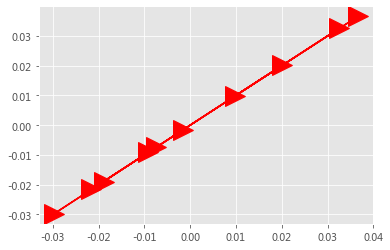

Doc2Vec¶
Le and Mikolov in 2014 introduced the Doc2Vec algorithm, which usually outperforms such simple-averaging of Word2Vec vectors.
https://cs.stanford.edu/~quocle/paragraph_vector.pdf
The basic idea is: act as if a document has another floating word-like vector, which contributes to all training predictions, and is updated like other word-vectors, but we will call it a doc-vector. Gensim’s Doc2Vec class implements this algorithm.
https://radimrehurek.com/gensim/models/doc2vec.html
from gensim.test.utils import common_texts
from gensim.models.doc2vec import Doc2Vec, TaggedDocument
import numpy as np
import matplotlib.pyplot as plt
plt.style.use('ggplot')
documents = [TaggedDocument(doc, [i]) for i, doc in enumerate(common_texts)]
model = Doc2Vec(documents, vector_size=10, window=5, min_count=1, workers=4, seed = 0)
common_texts
[['human', 'interface', 'computer'],
['survey', 'user', 'computer', 'system', 'response', 'time'],
['eps', 'user', 'interface', 'system'],
['system', 'human', 'system', 'eps'],
['user', 'response', 'time'],
['trees'],
['graph', 'trees'],
['graph', 'minors', 'trees'],
['graph', 'minors', 'survey']]
# duplicated "user"
duplicated_texts= [
['human', 'interface', 'computer'],
['survey', 'user', 'user','user', 'user','user', 'user','user', 'user','computer', 'system', 'response', 'time'],
['eps', 'user', 'user','user', 'user','user', 'user','user', 'user','interface', 'system'],
['system', 'human', 'system', 'eps'],
['user', 'user','user', 'user','user', 'user','user', 'user','response', 'time'],
['graph','trees'],
['trees'],
['graph', 'minors', 'trees'],
['graph', 'minors', 'survey']]
documents2 = [TaggedDocument(doc, [i]) for i, doc in enumerate(duplicated_texts)]
model2 = Doc2Vec(documents2, vector_size=10, window=5, min_count=1, workers=4, seed = 0)
model.wv['user'], model2.wv['user']
(array([-0.01891889, -0.0091159 , -0.02980401, 0.02008216, -0.02158123,
0.0325665 , 0.00983108, 0.03669152, -0.0015269 , -0.0073979 ],
dtype=float32),
array([-0.01898973, -0.00911209, -0.02986462, 0.02012529, -0.02158619,
0.03259935, 0.00989106, 0.03665011, -0.00151132, -0.0074449 ],
dtype=float32))
documents2
[TaggedDocument(words=['human', 'interface', 'computer'], tags=[0]),
TaggedDocument(words=['survey', 'user', 'user', 'user', 'user', 'user', 'user', 'user', 'user', 'computer', 'system', 'response', 'time'], tags=[1]),
TaggedDocument(words=['eps', 'user', 'user', 'user', 'user', 'user', 'user', 'user', 'user', 'interface', 'system'], tags=[2]),
TaggedDocument(words=['system', 'human', 'system', 'eps'], tags=[3]),
TaggedDocument(words=['user', 'user', 'user', 'user', 'user', 'user', 'user', 'user', 'response', 'time'], tags=[4]),
TaggedDocument(words=['graph', 'trees'], tags=[5]),
TaggedDocument(words=['trees'], tags=[6]),
TaggedDocument(words=['graph', 'minors', 'trees'], tags=[7]),
TaggedDocument(words=['graph', 'minors', 'survey'], tags=[8])]
plt.plot(model.wv['user'], model2.wv['user'], 'r->', markersize = 20);

plt.plot(model.wv['survey'], model2.wv['survey'], 'r->', markersize = 20);

plt.plot(model.wv['computer'], model2.wv['computer'], 'r->', markersize = 20);

# 将词向量投影到二维空间
rawWordVec = []
word2ind = {}
ind2word= {}
for i, w in enumerate(model.wv.vocab):
rawWordVec.append(model[w])
word2ind[w] = i
ind2word[i] = w
rawWordVec = np.array(rawWordVec)
rawWordVec2 = []
word2ind2 = {}
ind2word2= {}
for i, w in enumerate(model2.wv.vocab):
rawWordVec2.append(model2[w])
word2ind2[w] = i
ind2word2[i] = w
rawWordVec2 = np.array(rawWordVec2)
plt.plot(rawWordVec[0], rawWordVec2[0], 'r->', markersize = 20);

fig = plt.figure(figsize = (6, 6))
ax = fig.gca()
ax.set_facecolor('white')
ax.plot(rawWordVec[:, 0], rawWordVec[:, 1], 's', markersize = 5, alpha = 0.5, color = 'red')
for i in ['survey', 'computer', 'eps', 'interface', 'response']:
x1, y1 = rawWordVec[word2ind['user']]
x2, y2 = rawWordVec[word2ind[i]]
ax.plot([x1, x2], [y1, y2], 'r--')
# 设置中文字体，否则无法在图形上显示中文
#zhfont1 = matplotlib.font_manager.FontProperties(fname='/Library/Fonts/华文仿宋.ttf', size=26)
for k in ind2word:
x,y = rawWordVec[k]
if ind2word[k] in ['survey', 'computer', 'eps', 'interface', 'response', 'user']:
plt.text(x, y, ind2word[k], alpha = 1, color = 'purple', fontsize = 16, rotation=0)
else:
plt.text(x, y, ind2word[k], alpha = 1, color = 'black', fontsize = 16, rotation=0)
plt.axis('off');
---------------------------------------------------------------------------
ValueError Traceback (most recent call last)
<ipython-input-11-044b28ee5395> in <module>
5
6 for i in ['survey', 'computer', 'eps', 'interface', 'response']:
----> 7 x1, y1 = rawWordVec[word2ind['user']]
8 x2, y2 = rawWordVec[word2ind[i]]
9 ax.plot([x1, x2], [y1, y2], 'r--')
ValueError: too many values to unpack (expected 2)

fig = plt.figure(figsize = (6, 6))
ax = fig.gca()
ax.set_facecolor('white')
ax.plot(rawWordVec2[:, 0], rawWordVec2[:, 1], 's', markersize = 5, alpha = 0.5, color = 'red')
for i in ['survey', 'computer', 'eps', 'interface', 'response']:
x1, y1 = rawWordVec2[word2ind['user']]
x2, y2 = rawWordVec2[word2ind[i]]
ax.plot([x1, x2], [y1, y2], 'r--')
# 设置中文字体，否则无法在图形上显示中文
#zhfont1 = matplotlib.font_manager.FontProperties(fname='/Library/Fonts/华文仿宋.ttf', size=26)
for k in ind2word2:
x,y = rawWordVec2[k]
if ind2word2[k] in ['survey', 'computer', 'eps', 'interface', 'response', 'user']:
plt.text(x, y, ind2word2[k], alpha = 1, color = 'purple', fontsize = 16, rotation=0)
else:
plt.text(x, y, ind2word2[k], alpha = 1, color = 'black', fontsize = 16, rotation=0)
plt.axis('off');
tsne = TSNE(n_components=2, n_iter=10000000)
X_tsne = tsne.fit_transform(rawWordVec)
tsne2 = TSNE(n_components=2, n_iter=10000000)
X_tsne2 = tsne2.fit_transform(rawWordVec2)
fig = plt.figure(figsize = (6, 6))
ax = fig.gca()
ax.set_facecolor('white')
ax.plot(X_tsne[:, 0], X_tsne[:, 1], 's', markersize = 5, alpha = 0.5, color = 'red')
for i in ['survey', 'computer', 'eps', 'interface', 'response']:
x1, y1 = X_tsne[word2ind['user']]
x2, y2 = X_tsne[word2ind[i]]
ax.plot([x1, x2], [y1, y2], 'r--')
# 设置中文字体，否则无法在图形上显示中文
#zhfont1 = matplotlib.font_manager.FontProperties(fname='/Library/Fonts/华文仿宋.ttf', size=26)
for k in ind2word:
x,y = X_tsne[k]
if ind2word[k] in ['survey', 'computer', 'eps', 'interface', 'response', 'user']:
plt.text(x, y, ind2word[k], alpha = 1, color = 'purple', fontsize = 16, rotation=0)
else:
plt.text(x, y, ind2word[k], alpha = 1, color = 'black', fontsize = 16, rotation=0)
plt.axis('off');

# 2
fig = plt.figure(figsize = (6, 6))
ax = fig.gca()
ax.set_facecolor('white')
ax.plot(X_tsne2[:, 0], X_tsne2[:, 1], 's', markersize = 5, alpha = 0.5, color = 'red')
for i in ['survey', 'computer', 'eps', 'interface', 'response']:
x1, y1 = X_tsne2[word2ind2['user']]
x2, y2 = X_tsne2[word2ind2[i]]
ax.plot([x1, x2], [y1, y2], 'r--')
# 设置中文字体，否则无法在图形上显示中文
#zhfont1 = matplotlib.font_manager.FontProperties(fname='/Library/Fonts/华文仿宋.ttf', size=26)
for k in ind2word2:
x,y = X_tsne2[k]
if ind2word2[k] in ['survey', 'computer', 'eps', 'interface', 'response', 'user']:
plt.text(x, y, ind2word2[k], alpha = 1, color = 'purple', fontsize = 16, rotation=0)
else:
plt.text(x, y, ind2word2[k], alpha = 1, color = 'black', fontsize = 16, rotation=0)
plt.axis('off');